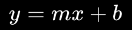
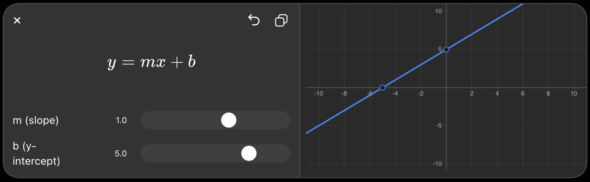
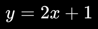
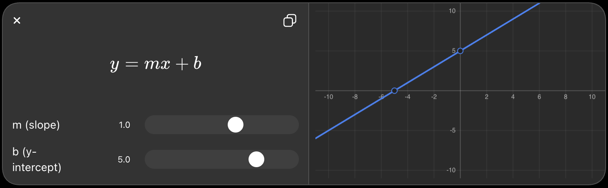
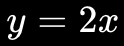
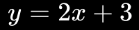
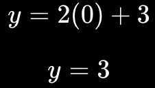
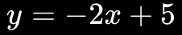

The common equation is:


Simply:
- x = where you are horizontally
- y = where you are vertically
- m = slope → how steep the line is
- b = starting point on the y-axis
Example

This means:
- Start at 1 on the y-axis.
- For every 1 step right, go 2 steps up.
- Keep doing this → you get a straight line.
Think of a line as a path:
start → move right → move up → move right → move up → ...
The mathematical idea is basically: a line describes a constant rate of change.
Think of a line equation as having two jobs:
- m = slope → tells you how the line moves
- b = y-intercept → tells you where the line starts on the y-axis

1. What is slope?
Slope tells you how steep the line is.
For example:

The slope is 2.
That means:
Every time you move 1 step to the right, you move 2 steps up.
So:
x → 1
y → 2
x → 1
y → 2
The line goes upward quickly.
2. What does + b mean?
Now look at:

The +3 is the starting point on the y-axis.
When x=0:

So the line starts at (0, 3) on the y-axis.
|
3 ● ← starts here
|\
2 | \
| \
1 | \
| \
-------+------------>
0
Then the slope 2 takes over:
Start at 3, then go up 2 for every 1 step right.
3. So remember this simple idea
For:
Think:
b = Where do I START?
m = How do I MOVE?
So:
means:
- Start at 3 on the y-axis
- Go up 2
- Go right 1
- Repeat
Example

- 5 → start at 5 on the y-axis
- -2 → go down 2 for every 1 right
So the + b isn't really "extra"—it moves the entire line up or down.